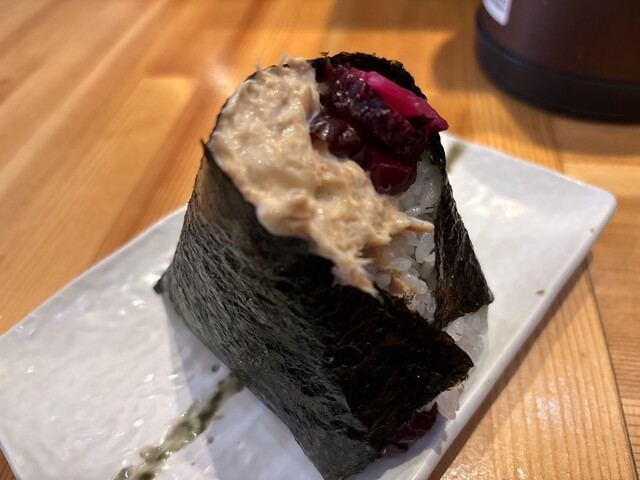
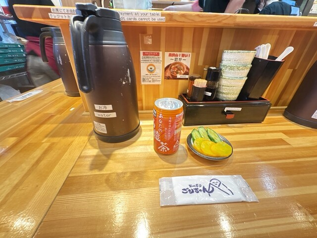
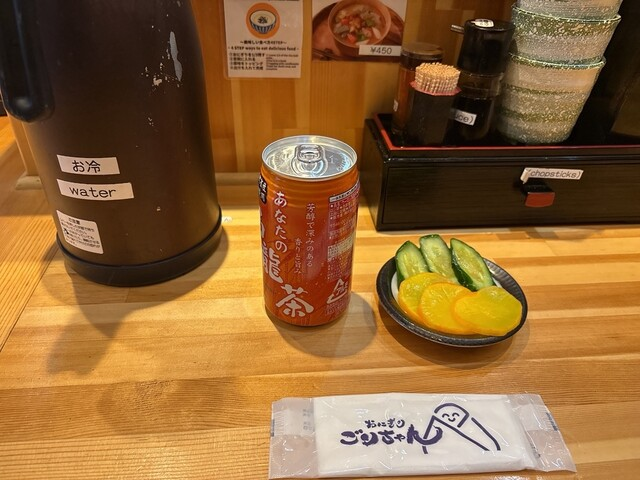
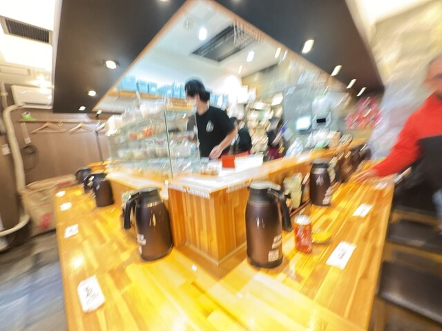
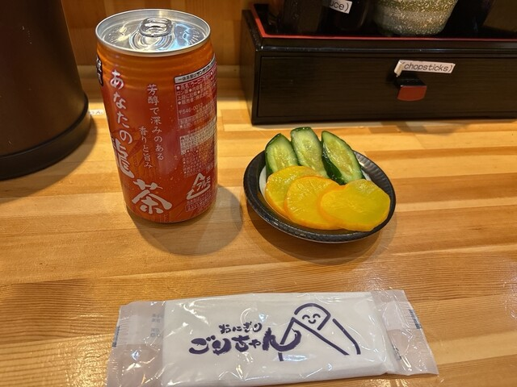
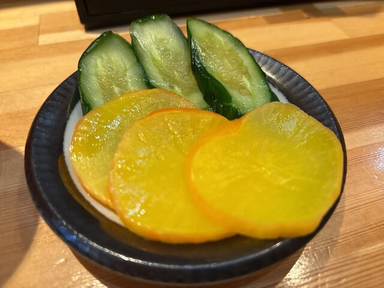
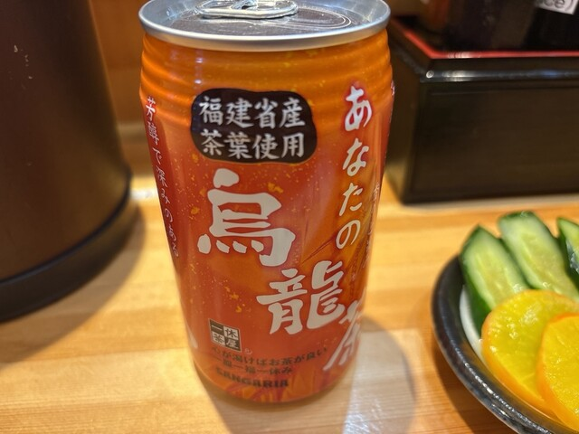
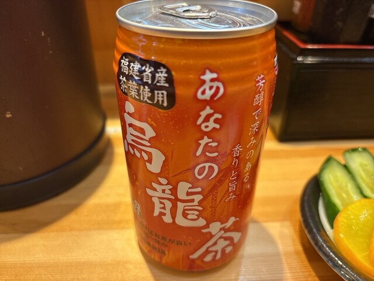
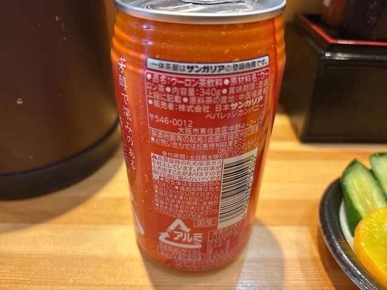
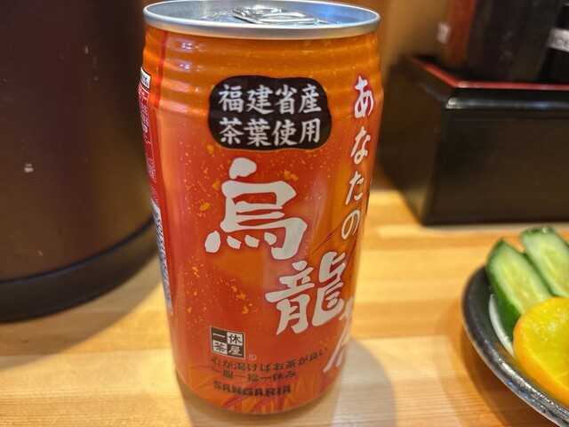

Galerie photos










Kevin, Loïc, May Nhia, Stéphanie, Estelle
Du 5 Avril au 27 Avril 2026
Petite adresse locale spécialisée dans l'onigiri à Minamisenba, pratique pour un repas simple, un brunch rapide ou un achat à emporter près de Shinsaibashi.










Onigiri Gorichan Namba est une option très simple et locale pour manger japonais sans gros budget: onigiri, petit format, accès rapide depuis Shinsaibashi, et format utile entre deux visites.
Conversion indicative sur base 1 EUR = 183.67 JPY (BCE, 10/03/2026). Prix observés sur Tabelog le 11/03/2026.